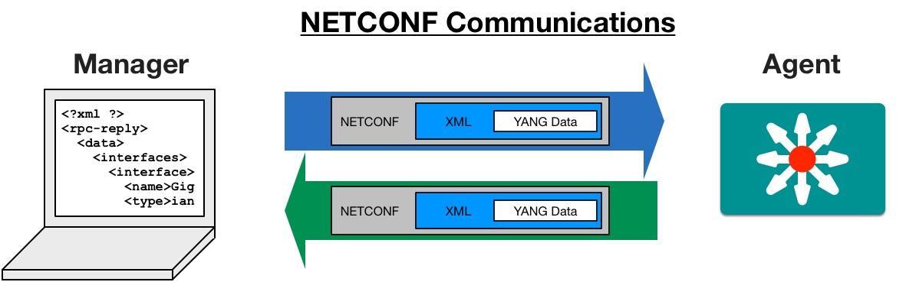
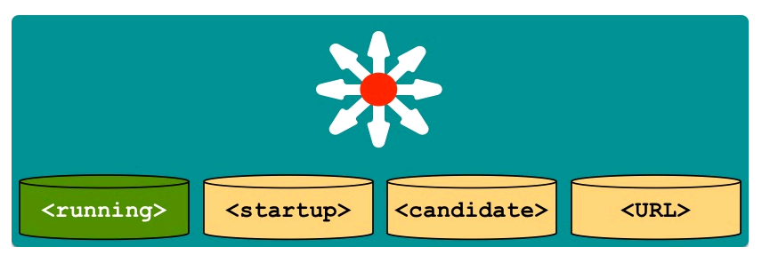
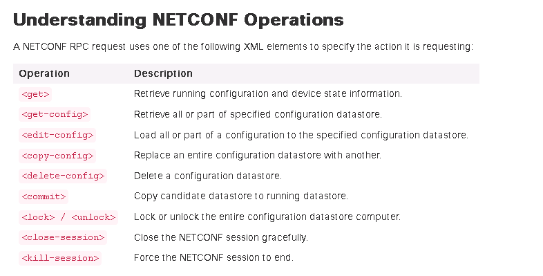

YANG
YANG is a data modeling language for NETCONF described in the following RFC
Repositories of YANG Models
YANG Tools
NETCONF
The NETCONF protocol is described in the following RFC :
NETCONF Tools
NETCONF protocol relies on YANG models which describe the device using well defined interfaces :

NETCONF protocol uses the RPC(Remote Procedure Call) for communications (SSH communications with XML data echange)

The NETCONF servers have differents datastore to manage configurational and operational data of the device.

Below is the list of NETCONF operations

The <edit-config> leaf can have an optional operation attribute.
By default the operation value is set to merge.
Below is the list of supported values for the operation attribue :
- merge
The configuration data identified by the element containing this attribute is merged with the configuration at the corresponding level in the configuration datastore identified by the
<target>parameter. This is the default behavior.
- replace
The configuration data identified by the element containing this attribute replaces any related configuration in the configuration datastore identified by the
<target>parameter. If no such configuration data exists in the configuration datastore, it is created. Unlike a<copy-config>operation, which replaces the entire target configuration, only the configuration actually present in the<config>parameter is affected.
- create
The configuration data identified by the element containing this attribute is added to the configuration if and only if the configuration data does not already exist in the configuration datastore. If the configuration data exists, an
<rpc-error>element is returned with an<error-tag>value of “data-exists”.
- delete
The configuration data identified by the element containing this attribute is deleted from the configuration if and only if the configuration data currently exists in the configuration datastore. If the configuration data does not exist, an
<rpc-error>element is returned with an<error-tag>value of “data-missing”.
- remove
The configuration data identified by the element containing this attribute is deleted from the configuration if the configuration data currently exists in the configuration datastore. If the configuration data does not exist, the “remove” operation is silently ignored by the server.